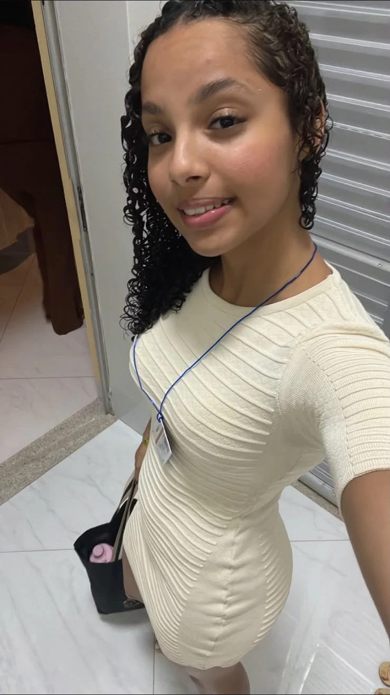

Sua próxima
trança,
do seu jeito.
Escolha o estilo que você gosta e eu cuido de cada detalhe. Atendo na sua casa ou no lugar que for melhor para você.
Atendimento em domicílio.
Qual trança
você quer fazer?
Tem uma ideia em mente? Veja os estilos abaixo.
Se ainda estiver em dúvida, eu te ajudo a escolher.

Muito prazer,Julie.
Oi, eu sou
a Julie!
Faço tranças em Ferraz de Vasconcelos e atendo em domicílio ou no local que você preferir.
Me conte o que você quer fazer ou mande uma foto de referência. A gente combina o estilo, os materiais e o horário, e eu faço suas tranças com cuidado, da raiz ao acabamento.
Veja as tranças
mais de perto.
Toque em uma foto para ampliar e ver outros ângulos.
Faço suas tranças
onde você preferir.
Ferraz de Vasconcelos e outras localidades sob consulta.
Escolha uma data
e fale comigo.
Escolha o estilo e sugira uma data.
Eu confirmo os detalhes com você pelo WhatsApp.
suas tranças? ♡
Qual é o valor das tranças?+
O orçamento depende do estilo, comprimento, materiais e deslocamento. Envie sua ideia ou uma referência pelo WhatsApp para combinar os valores com a Julie.
Você atende em domicílio?+
Sim! A Julie atende na sua casa ou no local de sua preferência. Informe a cidade e o bairro para consultar o deslocamento e combinar os detalhes.
Posso mandar uma foto de inspiração?+
Claro. Escolha “Outro estilo” ou “Me ajuda a escolher” no agendamento e envie sua referência na conversa do WhatsApp.
Preciso comprar o material?+
Antes do atendimento, combine com a Julie quais materiais serão usados e quem vai providenciá-los. Assim tudo fica alinhado para o seu estilo.
Escolher a data já garante meu horário?+
A escolha da data é uma solicitação. O atendimento fica confirmado depois que a Julie alinhar com você a disponibilidade, os valores e o local pelo WhatsApp.